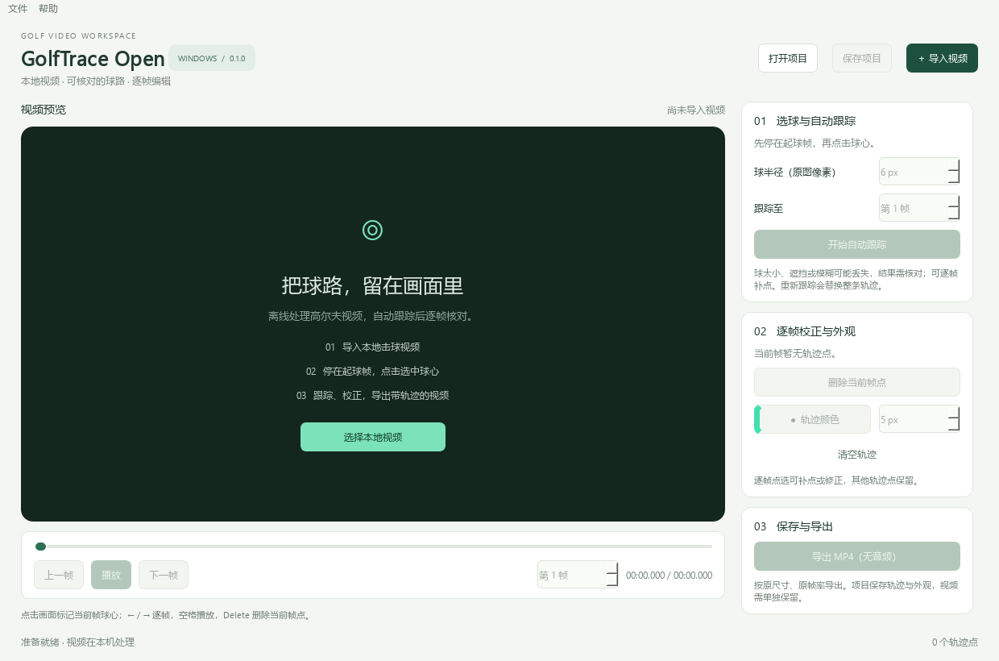

找到起球的一帧
导入本地视频，逐帧定位球刚离杆的位置，点击球心，设置画面中的球半径。
导入你的高尔夫视频，选中白球，跟踪可见的飞行轨迹。逐帧核对、自由校正，做出自己的球路视频。
Windows 10 / 11 · x64 · 视频在本机处理

三个步骤，保留你对每一帧的控制。
导入本地视频，逐帧定位球刚离杆的位置，点击球心，设置画面中的球半径。
程序跟踪可见的白球并补偿背景运动。丢球或误跟踪时，逐帧补点，校正球路。
选择线条颜色和宽度，保存可继续编辑的项目，导出带轨迹线的 MP4 视频。
安装版适合日常使用；便携版解压后即可运行。每次发行附 SHA-256 校验值。
首版 Alpha：自动结果需要核对，导出视频不包含音频。安装包尚未数字签名，Windows 可能显示未知发布者提示。
安装包正在完成构建与验证，准备就绪后在这里提供下载。
适用于清晰可见的白球。模糊、遮挡、极小目标或复杂背景可能导致丢失；球消失后不自动补造飞行位置，可以由你手动补点。
轨迹表示视频画面中的位置，不代表真实距离、三维弹道、球速或自旋。建议使用短视频和恒定帧率素材；可变帧率手机视频可能需要先转换。
整个过程在电脑本地进行。这个网站提供程序下载，不接收你的视频。